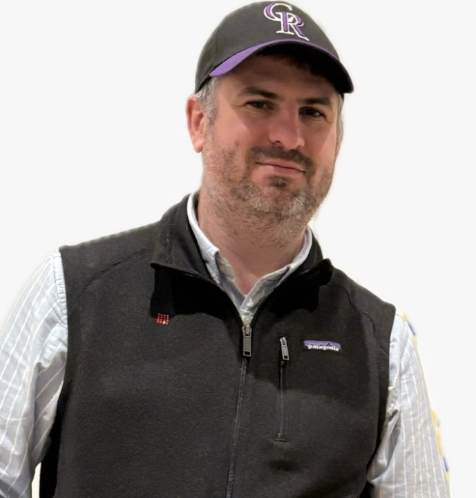

|  |
Contact information
Mailing Address: Christopher Thomas Ryan
University of British Columbia
Sauder School of Business
Office 463, Henry Angus Building
2053 Main Mall
Vancouver, BC, V6T 1Z2
Phone: (604) 822-8435
Email: chris.ryan[AT]sauder[DOT]ubc[DOT]ca
|